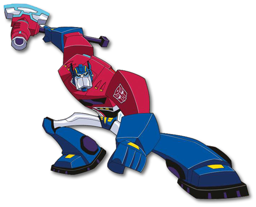
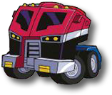

Autobot Bios
Optimus Prime
As a team, we can accomplish anything.
A young (by Cybertronian standards) commander of a ragtag and largely inexperienced group of misfit AUTOBOTS. He’s a born leader, a natural tactician, a dedicated never-say-die fighter and a master of improvisation in the face of adversity. Unassuming, humble, friendly and cheerful, Prime comes across as ‘The Bot Next Door.’
He takes his mission and his men with the utmost seriousness, but is still able to relate to them as a regular guy. He's not the kind of leader who needs to bark orders to command respect (besides, he’s got RATCHET to do that for him).
ROBOT MODE POWER
OPTIMUS PRIME has the ability to change any part of his robotic body into a tool or gadget. His arsenal includes a jet-powered axe, grappler and fire extinguisher.